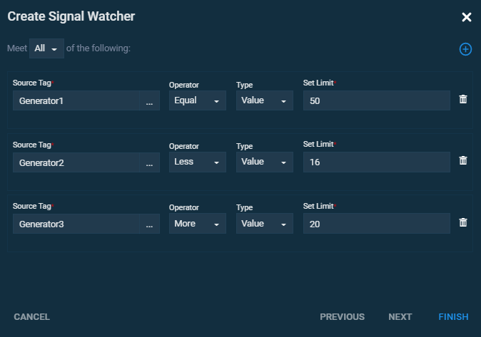
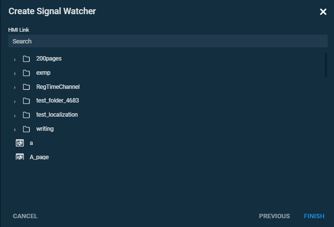

Creating a signal watcher#
The instruction for creating and configuring a signal watcher.
Signal watchers help users to control tag values.
To create the signal watcher follow the steps:
-
Click Create Signal Watcher in the Signal Watchers section.
-
Set the watcher's name, message and delays in the Create Signal Watcher dialog and click Next.

Figure 1. Create Signal Watcher menu, step 1 -
Configure source tags and other condition settings in the second step.
Note
Clicking Next after this step is optional, you can click Finish.
 Figure 2. Create Signal Watcher menu, step 2 You can set one or several source tags. In case of multiple tags, you can set the occurrence condition. The watcher can be activated if:
- All conditions are true
-
Any of the conditions is true A source tag has the following condition settings:
- Operator
Sets the mathematical relation between the source tag and the limit or another tag
- Type
Sets the object of comparison. It can either be another tag or the value of a current tag
- Comparing tag
Parameter is active if in the Type field Another Tag option is chosen. This setting defines the tag which is going to be compared to the source tag.
- Offset
Parameter is active if in the Type field Another Tag option is chosen. This setting defines an allowable amount of variation (tolerance).
- Set limit
Parameter is active if in the Type field Value option is chosen. This setting defines the value which is going to be compared to the source tag.
- Operator
-
Associate the watcher with the page and click Finish.
 Figure 3. Create Signal Watcher menu, step 3
Parent article:
- Signal watchers
Here you can read about signal watchers and their work principle. Also, the article tells about the parameters of signal watchers.
Related articles
- Alarms
In this article: alarms and what they do. You'll find out what does "acknowledge alarm" mean and what shelved and monitored alarms are.